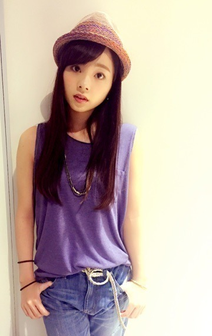
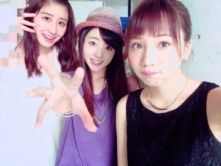
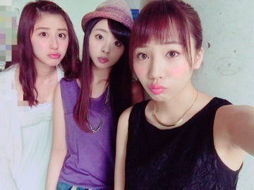
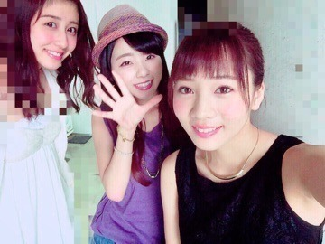

| 2015/06 10 Wed | 握手会.＊ 横浜ぁ... まに。 |
こんばんわぁ．まにだよ？ろってぃだよ。
皆さん, おつかれさまぁぁぁ♡.＊
皆今日も元気ですかぁ？
私は最近,本当に充実しています(o^^o)
早く皆さんにお知らせしたい事がいくつかあるんだけどねっ,,, まだ言えないのぉ～♡
お口はミッフィーちゃん。
日曜は,横浜にて個別握手会でした．
ではさっそくですが...
今回のまに私服です.＊

帽子,,,渋谷の帽子屋さん
トップス,,,GU
デニム,アクセサリー,,,OZOC
ベルト,,,H&M
ヒール,,,EMODA だよ♡
アクセとベルトはゴールドで合わしました.＊
左の手首に,シルバーとグリーンのアクセつけてます．光でとんどるね。
いつも女性の方々が,「いつもろってぃーの私服参考にしてるよぉ♡」って言ってもらえることが嬉しいです☺️
今回も又,ろってぃーレーンは最高に楽しかったです.＊ 皆ありがとう（＾ω＾）
沢山楽しませてもらいました！
最近,この3人で写真撮ってなかったので撮ったよぉ～ん．
♡

同じ口したの．笑

いい仲間.＊

全身

今日はらりんとじゅんなと,とある練習をしてきまして, その後にちょびっとレコーディングをしてきました＠ 'ェ' ＠♪
明日もお仕事 楽しくポジティブに頑張りまぁ～す.＊
皆 だいすきっ.
ほなお風呂入ってきましすねぇぇ
またねぇ(^O^)ノ
コメント(338)
2015/06/10 00:30